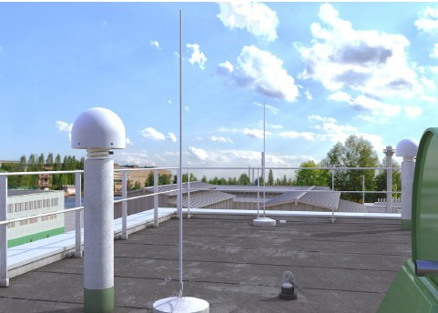
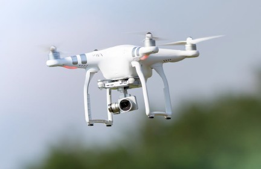

Der Arbeitgeber ist für den sicheren Einsatz der im Vermessungswesen verwendeten Arbeitsmittel verantwortlich. Um dies sicherzustellen, sind insbesondere die Anforderungen aus der Betriebssicherheitsverordnung zu beachten.
Grundsätzlich gilt, dass verwendete Arbeitsmittel während der gesamten Verwendungsdauer den geltenden Sicherheitsanforderungen entsprechen müssen. Dies kann dazu führen, dass ältere Arbeitsmittel sicherheitstechnisch nachgerüstet werden müssen. Sollten damit die Sicherheitsanforderungen nicht erreicht werden, dürfen die Arbeitsmittel nicht mehr verwendet werden.
Maßgeblich für eine sichere Handhabung der Arbeitsmittel ist die Beachtung der Vorgaben aus der Gebrauchsanleitung des Herstellers. Darüber hinaus kann die Erstellung einer Betriebsanweisung für einzelne Arbeitsmittel erforderlich sein. Für diese Arbeitsmittel muss der Arbeitgeber vor der erstmaligen Verwendung eine schriftliche Betriebsanweisung zur Verfügung stellen, die zudem in einer für die Beschäftigten verständlichen Form und Sprache vorliegen muss. Dies gilt nicht für Arbeitsmittel, die ohne Gebrauchsanleitung ausgeliefert werden dürfen, z. B. Hämmer. Die Betriebsanweisung ist regelmäßig auf Aktualität zu prüfen und gegebenenfalls anzupassen. Wenn eine Gebrauchsanleitung des Herstellers mit entsprechenden Inhalten vorliegt, kann der Arbeitgeber diese anstatt einer Betriebsanweisung nutzen.
Nach § 14 der Betriebssicherheitsverordnung müssen Arbeitsmittel in regelmäßigen Abständen von einer zur Prüfung befähigten Person (siehe unten) geprüft werden. Dies gilt auch für alle elektrischen Arbeitsmittel, wie z. B. Ladegeräte oder Spannungswandler. Die Prüfintervalle legt der Arbeitgeber fest. Die Ergebnisse der Prüfung müssen schriftlich dokumentiert werden.
| Hinweis |
| "Zur Prüfung befähigte Person ist eine Person, die durch ihre Berufsausbildung, ihre Berufserfahrung und ihre zeitnahe berufliche Tätigkeit über die erforderlichen Kenntnisse zur Prüfung von Arbeitsmitteln verfügt […]." (siehe BetrSichV, § 2, Abs. 6) |
Arbeitsmittel müssen außerdem vor jeder Verwendung durch Inaugenscheinnahme und, falls erforderlich, durch eine Funktionskontrolle sicherheitstechnisch kontrolliert werden. Festgestellte Mängel sind unverzüglich dem oder der Vorgesetzten zu melden.
Von Lasern geht, unabhängig von der angezeigten Laserklasse, insbesondere für die Augen ein erhebliches Gefährdungspotenzial aus. Der direkte Blick in einen Laserstrahl ist daher zu vermeiden. Durch Laser verursachte Blendungen können außerdem zu weiteren Gefährdungen führen, z. B. im Straßenverkehr. Zudem sollten bei der Verwendung von Lasern die Gefahren für an den Arbeiten unbeteiligte Personen bedacht werden.
Zur Ermittlung der konkreten Gefährdungen ist zwingend die Herstellerinformation, die jedem Lasergerät beiliegen muss, sowie die ggf. vorhandene Betriebsanweisung zu beachten.
Um das Gefährdungspotenzial zu minimieren, muss insbesondere dafür gesorgt werden, dass
Die Beschäftigten müssen außerdem mindestens jährlich über die möglichen Gefahren bei der Benutzung von Lasern unterwiesen werden. Falls erforderlich, ist eine Betriebsanweisung zu erstellen. Zudem muss bei der Verwendung von Lasern ab der Klasse 3R eine Laserschutzbeauftragung gemäß der Arbeitsschutzverordnung zu künstlicher optischer Strahlung (OStrV) benannt werden.
Rechtliche Grundlagen und weitere Informationen
|
Zur Positionsbestimmung werden häufig GNSS-Rover eingesetzt. Im Dauereinsatz stellt das Gewicht der Rover eine Belastung für die Beschäftigten dar. Hier können Befestigungen des Rovers am Messfahrzeug oder spezielle Tragehilfen für die bedienende Person für Entlastung sorgen.
Bei bestimmten Vermessungsarbeiten, wie z. B. topografische Erfassungen, werden teilweise Smartphones, Tablets und andere Handgeräte verwendet. Es besteht dabei die Gefahr, dass während der Fortbewegung nur auf das Display geschaut und die Umgebung damit nicht ausreichend beachtet wird. Dies ist unbedingt zu vermeiden, da Stolpermöglichkeiten und fließender Verkehr hierbei ein erhebliches Risiko darstellen.
Als Grundlage für eine hochgenaue Positionsbestimmung werden von den Bundesländern zudem flächendeckend SAPOS®-Referenzstationen betrieben. Zur Messdatenerfassung im Dauerbetrieb sind die Antennen dieser Referenzstationen an exponierter Stelle montiert, oftmals auf Dächern.
Die Installation und Wartung dieser Stationen bringen somit erhebliche Gefährdungen durch Absturz mit sich. Es kann eine arbeitsmedizinische Untersuchung nach den "DGUV Empfehlungen für arbeitsmedizinische Beratungen und Untersuchungen" (ehemals G41) sinnvoll sein. Unabhängig davon müssen ab einer Absturzhöhe von 1 m Schutzmaßnahmen ergriffen werden. Eine festinstallierte Absturzsicherung (Geländer oder ähnliches) ist dabei immer der Verwendung von PSA gegen Absturz vorzuziehen. Es sollten zugleich sichere Arbeitswege auf Dächern festgelegt und gekennzeichnet werden. Die Aufstiegsmöglichkeiten zur Referenzstation sind individuell unterschiedlich. An Dachaufstiegen und Dachausstiegen können zusätzliche Anschlageinrichtungen für PSAgA erforderlich sein (weitere Informationen zu PSAgA sind im Kapitel 3.8 zu finden).
Teilweise erfolgt der Zugang auch durch Hubsteiger. Diese müssen von einer fachkundigen Person bedient werden. Festinstallierten Treppen ist immer der Vorzug vor Leitern zu geben. Ob die Nutzung von Leitern zulässig ist, hängt unter anderem von
Weitere Informationen zur Verwendung von Leitern finden sich in Kapitel 9.8.
Alleinarbeit ist möglichst zu vermeiden. Die Notwendigkeit zur Nutzung einer Personen-Notsignal-Anlage ist zu prüfen.
Teilweise stehen Referenzstationen in unmittelbarer Nähe zu Telekommunikationsanlagen. Hier sollte mit dem Betreiber Rücksprache wegen möglicher Strahlenbelastung gehalten werden.

Abb. 9 Referenzstation auf einem Flachdach
Drohnen oder auch Unmanned Aerial Vehicles (UAV) werden in verschiedener Weise im Vermessungswesen eingesetzt. Durch ihr Gewicht sowie weitere gerätespezifische Eigenschaften werden sie in Kategorien mit unterschiedlichen Rechtsfolgen eingeteilt.

Abb. 10 Beispiel einer Drohne
Im Folgenden sind exemplarisch einige grundlegende Hinweise zum sicheren Umgang mit Drohnen aufgeführt:
Das Bundesministerium für Digitales und Verkehr (BMDV) bietet hilfreiche Informationen für den rechtssicheren Betrieb von Drohnen gemäß Luftverkehrsordnung (LuftVO).
Rechtliche Grundlagen und weitere Informationen
|
Nivellements werden für unterschiedlichste fachliche Anforderungen durchgeführt. Unabhängig von der geforderten Genauigkeit der Arbeitsergebnisse sind die auftretenden Gefährdungen ähnlich.
Allgemein bergen die bei den Nivellementsarbeiten verwendeten Nivellierlatten aufgrund ihrer Länge eine erhebliches Gefährdungspotenzial für die Trägerin oder den Träger sowie die umstehenden Personen. Daher ist bei deren Verwendung besondere Vorsicht geboten (z. B. im Bereich von Oberleitungen).
Nivellementsarbeiten im Straßenverkehrsbereich werden im Rahmen einer "beweglichen Arbeitsstätte von kürzerer Dauer" (siehe RSA) durchgeführt und sollten ausschließlich bei Tageslicht erfolgen. Die Arbeiten dürfen auch an Folgetagen durchgeführt werden, ohne diesen Status zu verlieren. Nivellements sollten, wenn möglich, auf Geh- und Radwegen durchgeführt werden.
Ein Sonderfall des Nivellements im Straßenbereich stellt das "Motorisierte Nivellement" dar. Nivellierlatten und teilweise auch das Nivelliergerät werden hierbei direkt von den Fahrzeugen aus bedient. Eine Gefährdungsbeurteilung, welche die besonderen Umstände berücksichtigt, sowie angepasste Regelpläne, sind grundlegende Anforderungen für den sicheren Betrieb. Ein Umbau bzw. technische Änderungen der Fahrzeuge sind einer amtlichen Prüfung zu unterziehen. Zudem ist eine Betriebsanweisung für die besonderen Arbeitsplätze auf den Fahrzeugen zu erstellen.
Nivellements in anderen Bereichen, z. B. Baustellen, unterscheiden sich in den möglichen Gefährdungen nicht grundsätzlich von den übrigen vermessungstechnischen Arbeiten in diesen Bereichen. Neben der Absprache mit dem oder der Verantwortlichen vor Ort ist eine Gefährdungsbeurteilung der örtlichen Situation Grundlage für die sichere Durchführung der jeweiligen Tätigkeit.
Rechtliche Grundlagen und weitere Informationen |
Handgeführte Geräte und Werkzeuge, elektrische wie rein mechanische, können zum Sicherheitsrisiko werden, besonders dann, wenn sie nicht bestimmungsgemäß verwendet werden. Regelmäßige Unterweisungen auf Basis von Betriebsanleitungen und Betriebsanweisungen sind daher äußerst wichtig. Auch die Beurteilung, ob Beschäftigte körperlich und fachlich in der Lage sind, Geräte, wie z. B. eine Kettensäge, sicher zu bedienen, gehört zur unternehmerischen Verantwortung. Für bestimmte Personengruppen, z. B. Jugendliche bis zur Vollendung des 18. Lebensjahres, gibt es zudem Verwendungsbeschränkungen hinsichtlich einiger Werkzeuge und Geräte. Grundsätzlich sollten nur Geräte und Werkzeuge verwendet werden, die mit einem CE-Kennzeichen versehen sind.
Werkzeuge wie Messer, Hammer, Meißel, Machete oder Beil bergen nicht nur bei der Benutzung ein bedeutendes Gefährdungspotenzial. Wichtig sind bei diesen oft genutzten Werkzeugen auch der sichere Transport und die sichere Lagerung. So sind z. B. scharfe Klingen stets mit passenden Scheiden abzudecken. Zudem sollten für den sicheren Transport passende Behälter gewählt und die Werkzeuge darin so abgelegt werden, dass eine sichere Entnahme möglich ist.
Elektrische Gefährdungen spielen bei handgeführten Baugeräten, wie z. B. Bohrmaschinen, eine große Rolle. Diese können beispielsweise durch die Verwendung von Geräten gemindert werden, die für den gewerblichen Bereich geeignet sind und damit auch widrigen, äußeren Einflüssen standhalten. Für diese Geräte muss eine regelmäßige Prüfung und Instandhaltung entsprechend der Gefährdungsbeurteilung bzw. der Herstellerangaben sichergestellt sein.
Bei der Verwendung von handgeführten Geräten und Werkzeugen können Gefährdungen für das Gehör (Schallpegel), die Atemwege (Staubentwicklung) und die Augen (z. B. durch Splitter) auftreten, die sich oft nur durch geeignete persönliche Schutzausrüstungen mindern lassen (siehe Kapitel 3).
Ist mit erdverlegten Leitungen zu rechnen, sollten nur Grabwerkzeuge verwendet werden, die keinen elektrischen Strom in den Körper weiterleiten.
Mechanische Beschädigungen und thermische Einwirkungen von Akkus können zu Explosionen sowie zum Ausstritt von gesundheitsgefährdenden Stoffen führen.
Die Vermeidung von sehr heißen Umgebungen, sachgemäßer Transport, geeignete Lagerung und die ordnungsgemäße Verwendung der zugehörigen Ladegeräte sind daher Voraussetzungen für einen sicheren Betrieb.
Im Rahmen der Gefährdungsbeurteilung ist zu prüfen, ob die Vermessung ohne Leiter durchführbar ist.
Alternativen sind z. B. das reflektorlose Messen oder der Einsatz von fahrbaren Arbeitsbühnen oder Hubarbeitsbühnen. Nur wenn diese Alternativen begründet nicht eingesetzt werden können, dürfen tragbare Leitern verwendet werden. Bei ungünstigen Witterungsbedingungen (z. B. starker Regen, Wind, Vereisung) sollte auf den Einsatz von Leitern verzichtet werden. Auch bei Leitern ist die Prüfung auf Mängel vor jedem Einsatz durch Inaugenscheinnahme und in regelmäßigen Abständen durch eine zur Prüfung befähigte Person erforderlich. In Abbildung 11 sind einige Sicherheitshinweise zur Verwendung von Leitern dargestellt.

Abb. 11 Hinweise zur Verwendung von Leitern
Rechtliche Grundlagen und weitere Informationen
|